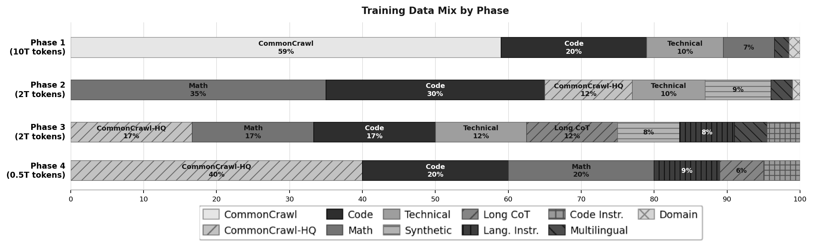
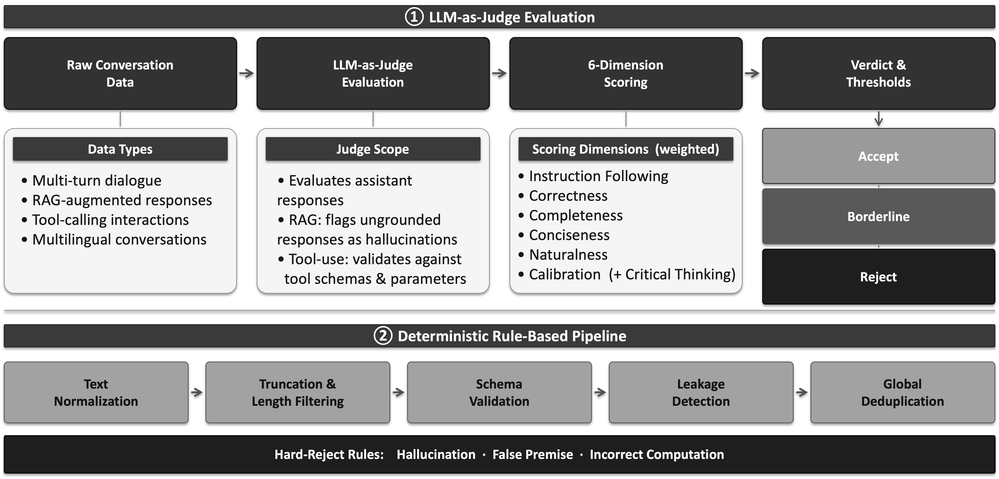
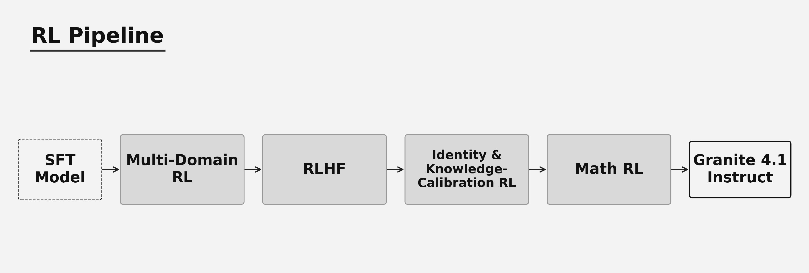

2026-04-29 · 主干正代 · Data quality over scale
Granite 4.1
Dense 3B/8B/30B，共享一条分阶段数据精炼和后训练路线。8B追平旧32B-A9B是整套配方的结果，不是Dense架构因果消融。
~15T基础预训练tokens
4.1M质量审计后SFT样本
3B / 8B / 30B同一family，Apache2.0
五阶段数据时序
10T通用→2T数学/代码→2T高质量退火→0.5T精炼→LCE。512K最终扩展仅明确用于8B/30B，不向3B广播最大值。
SFT硬缺陷优先
LLM Judge评六维，严重幻觉/错误前提/计算错误覆盖总分。规则校验schema与泄漏，保留过滤和修复的审计轨迹。
RL机制边界
SkyRL + on-policy GRPO + DAPO loss，dynamic sampling关闭。多域RL→RLHF→身份/校准→Math RL，不能把采用loss等于启用全套DAPO。
反例也要保留
IFEval82.30/87.06/89.65；MGSM70.00/82.32/71.12。规模收益并非每项单调，指标和参考点不能相加。


